Visual MCMC diagnostics using the bayesplot package
Jonah Gabry
2017-08-08
This vignette focuses on MCMC diagnostic plots. Plots of parameter estimates from MCMC draws and graphical posterior predictive checks are covered in separate vignettes.
In addition to bayesplot we’ll load the following packages:
- ggplot2 for customizing the ggplot objects created by bayesplot
- rstan for fitting the example models used throughout the vignette
library("bayesplot")
library("ggplot2")
library("rstan") General MCMC diagnostics
A Markov chain generates draws from the target distribution only after it has converged to equilibrium. Unfortunately, this is only guaranteed in the limit in theory. In practice, diagnostics must be applied to monitor whether the Markov chain(s) have converged. The bayesplot package provides various plotting functions for visualizing Markov chain Monte Carlo (MCMC) diagnostics after fitting a Bayesian model. MCMC draws from any package can be used with bayesplot, although there are a few diagnostic plots that are specifically intended to be used for Stan models.
To demonstrate, in this vignette we’ll use the eight schools example discussed in Rubin (1981), Gelman et al (2013), and the RStan Getting Started wiki. This is a simple hierarchical meta-analysis model with data consisting of point estimates y and standard errors sigma from analyses of test prep programs in J=8 schools:
schools_dat <- list(
J = 8,
y = c(28, 8, -3, 7, -1, 1, 18, 12),
sigma = c(15, 10, 16, 11, 9, 11, 10, 18)
)The model is: \[ \begin{align*} y_j &\sim {\rm Normal}(\theta_j, \sigma_j), \quad j = 1,\dots,J \\ \theta_j &\sim {\rm Normal}(\mu, \tau), \quad j = 1, \dots, J \\ \mu &\sim {\rm Normal}(0, 10) \\ \tau &\sim {\rm half-Cauchy}(0, 10), \end{align*} \] with the normal distribution parameterized by the mean and standard deviation, not the variance or precision. In Stan code:
// Saved in 'schools_mod_cp.stan'
data {
int<lower=0> J;
vector[J] y;
vector<lower=0>[J] sigma;
}
parameters {
real mu;
real<lower=0> tau;
vector[J] theta;
}
model {
mu ~ normal(0, 10);
tau ~ cauchy(0, 10);
theta ~ normal(mu, tau);
y ~ normal(theta, sigma);
}This parameterization of the model is referred to as the centered parameterization (CP). We’ll also fit the same statistical model but using the so-called non-centered parameterization (NCP), which replaces the vector \(\theta\) with a vector \(\eta\) of a priori i.i.d. standard normal parameters and then contructs \(\theta\) deterministically from \(\eta\) by scaling by \(\tau\) and shifting by \(\mu\): \[ \begin{align*} \theta_j &= \mu + \tau \,\eta_j, \quad j = 1,\dots,J \\ \eta_j &\sim N(0,1), \quad j = 1,\dots,J. \end{align*} \] The Stan code for this model is:
// Saved in 'schools_mod_ncp.stan'
data {
int<lower=0> J;
vector[J] y;
vector<lower=0>[J] sigma;
}
parameters {
real mu;
real<lower=0> tau;
vector[J] eta;
}
transformed parameters {
vector[J] theta;
theta = mu + tau * eta;
}
model {
mu ~ normal(0, 10);
tau ~ cauchy(0, 10);
eta ~ normal(0, 1); // implies theta ~ normal(mu, tau)
y ~ normal(theta, sigma);
}The centered and non-centered are two parameterizations of the same statistical model, but they have very different practical implications for MCMC. Using the bayesplot diagnostic plots, we’ll see that, for this data, the NCP is required in order to properly explore the posterior distribution.
To fit both models we first translate the Stan code to C++ and compile it using the stan_model function.
schools_mod_cp <- stan_model("schools_mod_cp.stan")
schools_mod_ncp <- stan_model("schools_mod_ncp.stan")We then fit the model by calling Stan’s MCMC algorithm using the sampling function,
fit_cp <- sampling(schools_mod_cp, data = schools_dat)Warning: There were 135 divergent transitions after warmup. Increasing adapt_delta above 0.8 may help. See
http://mc-stan.org/misc/warnings.html#divergent-transitions-after-warmupWarning: There were 1 chains where the estimated Bayesian Fraction of Missing Information was low. See
http://mc-stan.org/misc/warnings.html#bfmi-lowWarning: Examine the pairs() plot to diagnose sampling problemsfit_ncp <- sampling(schools_mod_ncp, data = schools_dat)Warning: There were 2 divergent transitions after warmup. Increasing adapt_delta above 0.8 may help. See
http://mc-stan.org/misc/warnings.html#divergent-transitions-after-warmup
Warning: Examine the pairs() plot to diagnose sampling problemsand extract a iterations x chains x parameters array of posterior draws with as.array,
# Extract posterior draws for later use
posterior_cp <- as.array(fit_cp)
posterior_ncp <- as.array(fit_ncp)For now ignore any warnings issued by the sampler. We will come back to them later in the Diagnostics for the No-U-Turn Sampler section.
Rhat: potential scale reduction statistic
One way to monitor whether a chain has converged to the equilibrium distribution is to compare its behavior to other randomly initialized chains. This is the motivation for the Gelman and Rubin (1992) potential scale reduction statistic, \(\hat{R}\). The \(\hat{R}\) statistic measures the ratio of the average variance of samples within each chain to the variance of the pooled samples across chains; if all chains are at equilibrium, these will be the same and \(\hat{R}\) will be one. If the chains have not converged to a common distribution, the \(\hat{R}\) statistic will be greater than one. (Stan Development Team, 2016).
The bayesplot package provides the functions mcmc_rhat and mcmc_rhat_hist for visualizing \(\hat{R}\) estimates.
First we’ll quickly fit one of the models above again, this time intentionally using too few MCMC iterations. This should lead to some high \(\hat{R}\) values.
fit_cp_100iter <- sampling(schools_mod_cp, data = schools_dat,
chains = 2, iter = 100)Warning: There were 2 divergent transitions after warmup. Increasing adapt_delta above 0.8 may help. See
http://mc-stan.org/misc/warnings.html#divergent-transitions-after-warmupWarning: There were 1 chains where the estimated Bayesian Fraction of Missing Information was low. See
http://mc-stan.org/misc/warnings.html#bfmi-lowWarning: Examine the pairs() plot to diagnose sampling problemsbayesplot provides a generic rhat extractor function, currently with methods defined for models fit using the rstan and rstanarm packages. But regardless of how you fit your model, all bayesplot needs is a vector of \(\hat{R}\) values.
rhats <- rhat(fit_cp_100iter)
print(rhats) mu tau theta[1] theta[2] theta[3] theta[4] theta[5] theta[6]
1.550589 1.514685 1.411436 1.425552 1.498789 1.387745 1.330194 1.393952
theta[7] theta[8] lp__
1.534572 1.421231 1.484684 We can visualize the \(\hat{R}\) values with the mcmc_rhat function:
color_scheme_set("brightblue") # see help("color_scheme_set")
mcmc_rhat(rhats)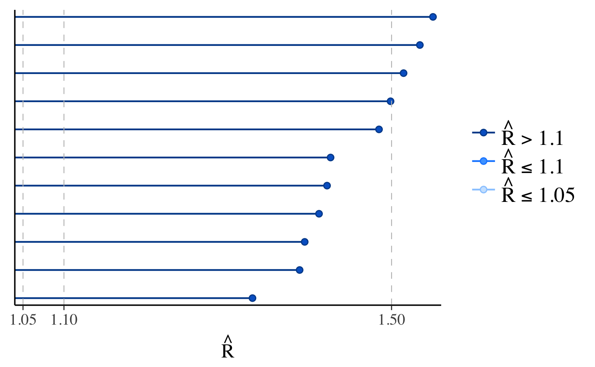
In the plot, the points representing the \(\hat{R}\) values are colored based on whether they are less than \(1.05\), between \(1.05\) and \(1.1\), or greater than \(1.1\).
The axis \(y\)-axis text is off by default for this plot because it’s only possible to see the labels clearly for models with very few parameters. We can see the names of the parameters with the concerning \(\hat{R}\) values using the yaxis_text convenience function (which passes arguments like hjust to ggplot2::element_text):
mcmc_rhat(rhats) + yaxis_text(hjust = 1)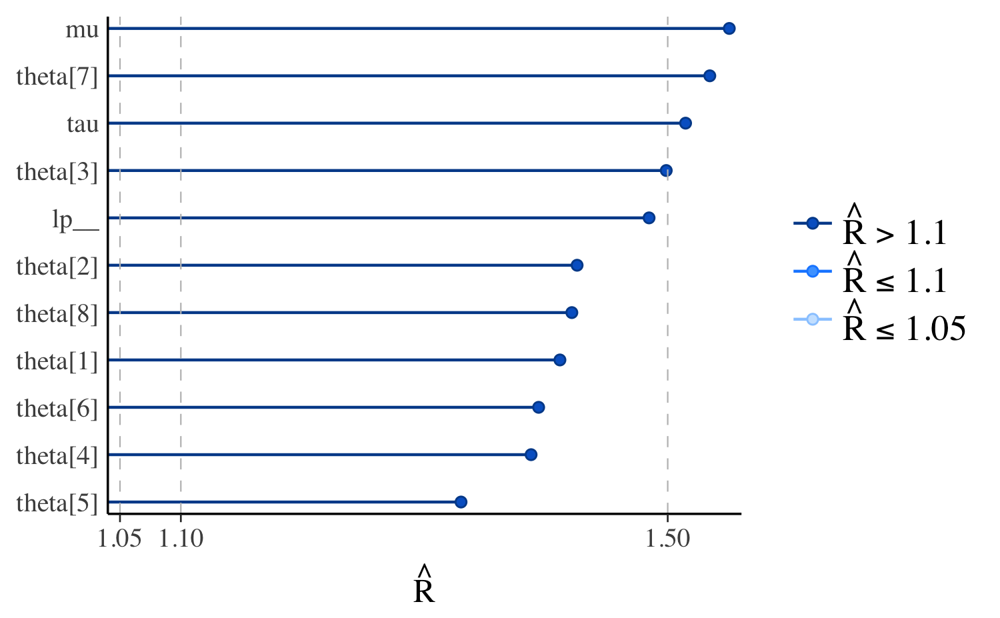
If we look at the same model fit using longer Markov chains we should see all \(\hat{R} < 1.1\), and all points in the plot the same (light) color:
mcmc_rhat(rhat = rhat(fit_cp)) + yaxis_text(hjust = 0)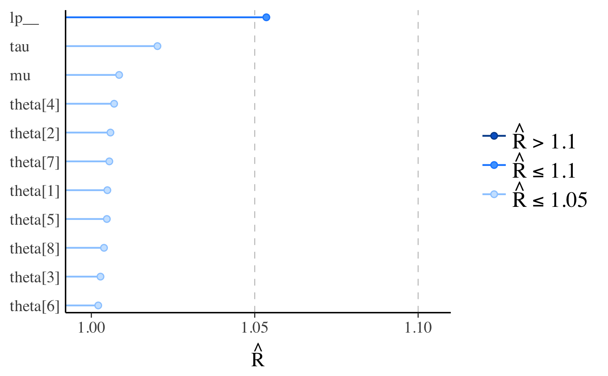
We can see the same information shown by mcmc_rhat but in histogram form using the mcmc_rhat_hist function. See the Examples section in help("mcmc_rhat_hist") for examples.
Effective sample size
The effective sample size is an estimate of the number of independent draws from the posterior distribution of the estimand of interest. Because the draws within a Markov chain are not independent if there is autocorrelation, the effective sample size, \(n_{eff}\), will be smaller than the total sample size, \(N\). The larger the ratio of \(n_{eff}\) to \(N\) the better.
The bayesplot package provides a generic neff_ratio extractor function, currently with methods defined for models fit using the rstan and rstanarm packages. But regardless of how you fit your model, all bayesplot needs is a vector of \(n_{eff}/N\) values. The mcmc_neff and mcmc_neff_hist can then be used to plot the ratios.
ratios_cp <- neff_ratio(fit_cp)
print(ratios_cp) mu tau theta[1] theta[2] theta[3] theta[4]
0.15458075 0.06198422 0.18352305 0.26519496 0.31695215 0.26528783
theta[5] theta[6] theta[7] theta[8] lp__
0.27797910 0.34409370 0.14860607 0.33880252 0.02398288 mcmc_neff(ratios_cp, size = 2)
In the plot, the points representing the values of \(n_{eff}/N\) are colored based on whether they are less than \(0.1\), between \(0.1\) and \(0.5\), or greater than \(0.5\). These particular values are arbitrary in that they have no particular theoretical meaning, but a useful heuristic is to worry about any \(n_{eff}/N\) less than \(0.1\).
One important thing to keep in mind is that these ratios will depend not only on the model being fit but also on the particular MCMC algorithm used. One reason why we have such high ratios of \(n_{eff}\) to \(N\) is that the No-U-Turn sampler used by rstan generally produces draws from the posterior distribution with much lower autocorrelations compared to draws obtained using other MCMC algorithms (e.g., Gibbs).
Even for models fit using rstan the parameterization can make a big difference. Here are the \(n_{eff}/N\) plots for fit_cp and fit_ncp side by side.
# A function we'll use several times to plot comparisons of the centered
# parameterization (cp) and the non-centered parameterization (ncp). See
# help("bayesplot_grid") for details on the bayesplot_grid function used here.
compare_cp_ncp <- function(cp_plot, ncp_plot, ncol = 2) {
bayesplot_grid(
cp_plot, ncp_plot,
grid_args = list(ncol = ncol),
subtitles = c("Centered parameterization",
"Non-centered parameterization")
)
}
neff_cp <- neff_ratio(fit_cp, pars = c("theta", "mu", "tau"))
neff_ncp <- neff_ratio(fit_ncp, pars = c("theta", "mu", "tau"))
compare_cp_ncp(mcmc_neff(neff_cp), mcmc_neff(neff_ncp), ncol = 1)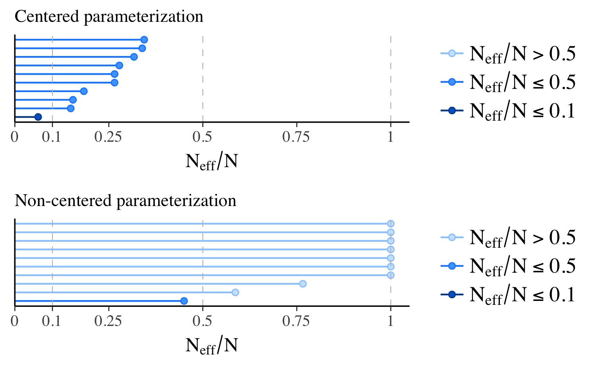
Because of the difference in parameterization, the effective sample sizes are much better for the second model, the non-centered parameterization.
Autocorrelation
As mentioned above, \(n_{eff}/N\) decreases as autocorrelation becomes more extreme. We can visualize the autocorrelation using the mcmc_acf (line plot) or mcmc_acf_bar (bar plot) functions. For the selected parameters, these functions show the autocorrelation for each Markov chain separately up to a user-specified number of lags.
Here we can again see a difference when comparing the two parameterizations of the same model. For model 1, \(\theta_1\) is the primitive parameter for school 1, whereas for the non-centered parameterization in model 2 the primitive parameter is \(\eta_1\) (and \(\theta_1\) is later constructed from \(\eta_1\), \(\mu\), and \(\tau\)):
compare_cp_ncp(
mcmc_acf(posterior_cp, pars = "theta[1]", lags = 10),
mcmc_acf(posterior_ncp, pars = "eta[1]", lags = 10)
)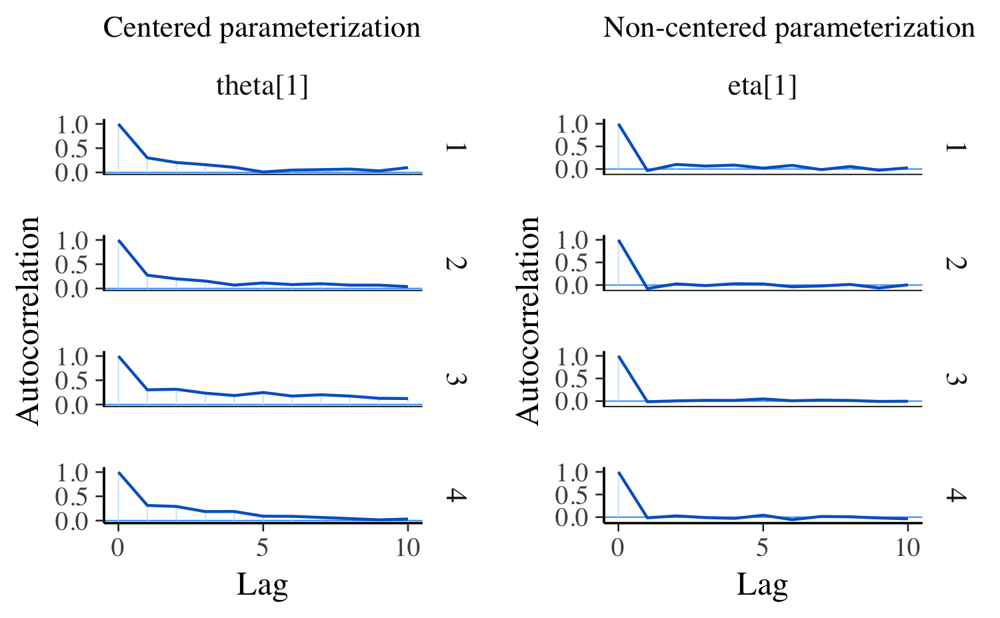
Diagnostics for the No-U-Turn Sampler
The No-U-Turn Sampler (NUTS, Hoffman and Gelman, 2014) is the variant of Hamiltonian Monte Carlo (HMC) used by Stan and the various R packages that depend on Stan for fitting Bayesian models.
The bayesplot package has special functions for visualizing some of the unique diagnostics permitted by HMC, and NUTS in particular. See Betancourt (2017), Betancourt and Girolami (2013), and Stan Development Team (2016) for more details on the concepts.
The special bayesplot functions for NUTS diagnostics are
available_mcmc(pattern = "_nuts_")bayesplot MCMC module:
(matching pattern '_nuts_')
mcmc_nuts_acceptance
mcmc_nuts_divergence
mcmc_nuts_energy
mcmc_nuts_stepsize
mcmc_nuts_treedepthThe bayesplot package also provides generic functions log_posterior and nuts_params for extracting the required information for the plots from fitted model objects. Currently methods are provided for models fit using the rstan and rstanarm packages, although it is not difficult to define additional methods for the objects returned by other R packages. For the Stan models we fit above we can use the log_posterior and nuts_params methods for stanfit objects:
lp_cp <- log_posterior(fit_cp)
head(lp_cp) Iteration Value Chain
1 1 -28.68456 1
2 2 -24.63600 1
3 3 -21.00482 1
4 4 -20.16974 1
5 5 -17.63563 1
6 6 -15.50722 1np_cp <- nuts_params(fit_cp)
head(np_cp) Iteration Parameter Value Chain
1 1 accept_stat__ 0.7253488 1
2 2 accept_stat__ 0.8979986 1
3 3 accept_stat__ 0.9920269 1
4 4 accept_stat__ 0.9364180 1
5 5 accept_stat__ 0.9881373 1
6 6 accept_stat__ 0.9967914 1# for the second model
lp_ncp <- log_posterior(fit_ncp)
np_ncp <- nuts_params(fit_ncp)Divergent transitions
When running the Stan models at the beginning of this vignette there were warnings about divergent transitions. For an explanation of these warnings see Divergent transitions after warmup.
The divergences argument to the mcmc_trace function can be used to add a rug plot (in red) of the divergences to a trace plot of parameter draws. Typically we can see that at least one of the chains is getting stuck wherever there is a cluster of many red marks:
color_scheme_set("mix-brightblue-gray")
mcmc_trace(posterior_cp, pars = "tau", divergences = np_cp) +
xlab("Post-warmup iteration")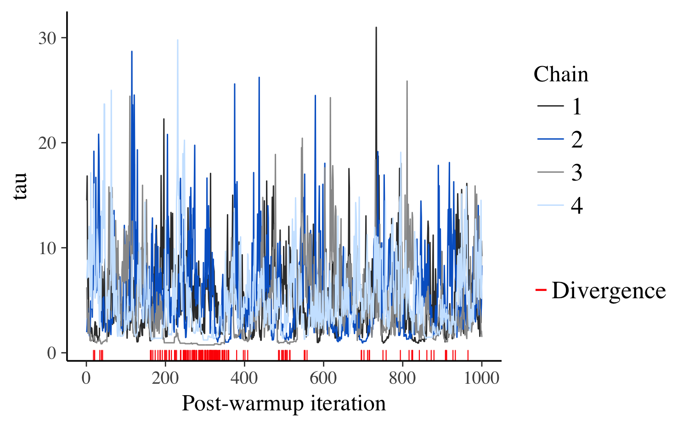
To look deeper at the information conveyed by the divergences we can use the mcmc_nuts_divergence function:
color_scheme_set("red")
mcmc_nuts_divergence(np_cp, lp_cp)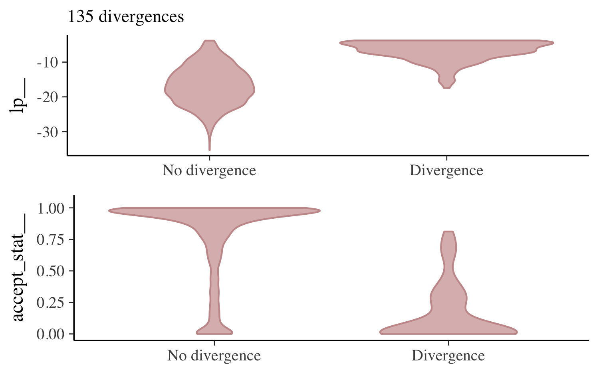
In the top panel we see the distribution of the log-posterior when there was no divergence vs the distribution when there was a divergence. Divergences often indicate that some part of the posterior isn’t being explored and the plot confirms that lp|Divergence indeed has lighter tails than lp|No divergence.
The bottom panel shows the same thing but instead of the log-posterior the NUTS acceptance statistic is shown.
Specifying the optional chain argument will overlay the plot just for a particular Markov chain on the plot for all chains combined:
mcmc_nuts_divergence(np_cp, lp_cp, chain = 4)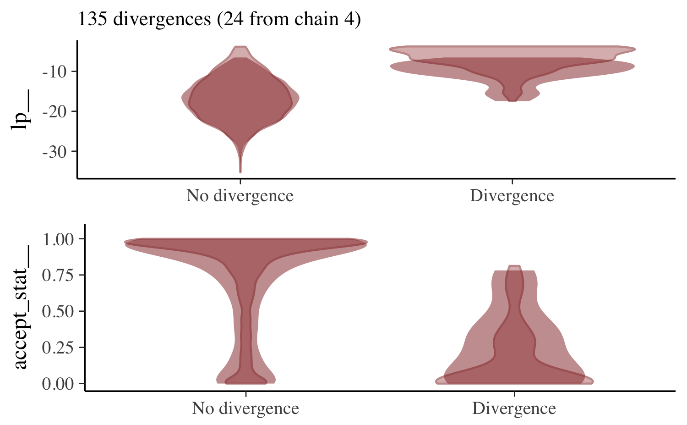
For the non-centered parameterization we may get a few warnings about divergences but if we do we’ll have far fewer of them to worry about.
mcmc_nuts_divergence(np_ncp, lp_ncp)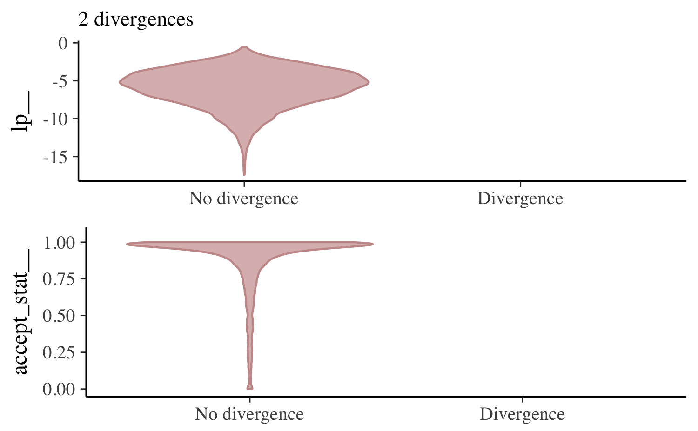
If there are only a few divergences we can often get rid of them by increasing the target acceptance rate (adapt_delta), which has the effect of lowering the stepsize used by the sampler and allowing the Markov chains to explore more complicated curvature in the target distribution.
fit_cp_2 <- sampling(schools_mod_cp, data = schools_dat,
control = list(adapt_delta = 0.99))Warning: There were 6 divergent transitions after warmup. Increasing adapt_delta above 0.99 may help. See
http://mc-stan.org/misc/warnings.html#divergent-transitions-after-warmupWarning: There were 596 transitions after warmup that exceeded the maximum treedepth. Increase max_treedepth above 10. See
http://mc-stan.org/misc/warnings.html#maximum-treedepth-exceededWarning: There were 4 chains where the estimated Bayesian Fraction of Missing Information was low. See
http://mc-stan.org/misc/warnings.html#bfmi-lowWarning: Examine the pairs() plot to diagnose sampling problemsfit_ncp_2 <- sampling(schools_mod_ncp, data = schools_dat,
control = list(adapt_delta = 0.99))For the first model and this particular data, increasing adapt_delta will not solve the problem and a reparameterization is required.
mcmc_nuts_divergence(nuts_params(fit_cp_2), log_posterior(fit_cp_2))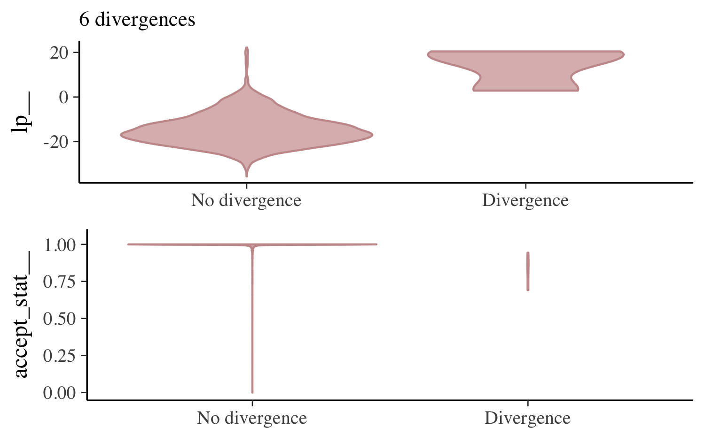
mcmc_nuts_divergence(nuts_params(fit_ncp_2), log_posterior(fit_ncp_2))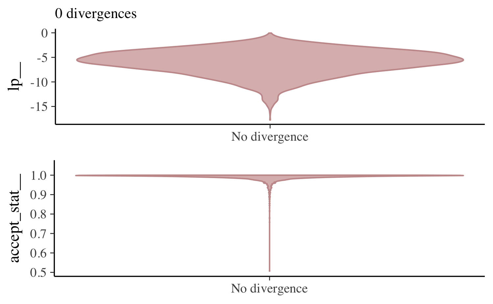
Energy and Bayesian fraction of missing information
The mcmc_nuts_energy function creates plots similar to those presented in Betancourt (2017). While mcmcm_nuts_divergence can identify light tails and incomplete exploration of the target distribution, the mcmc_nuts_energy function can identify overly heavy tails that are also challenging for sampling. Informally, the energy diagnostic for HMC (and the related energy-based Bayesian fraction of missing information) quantifies the heaviness of the tails of the posterior distribution.
The plot created by mcmc_nuts_energy shows overlaid histograms of the (centered) marginal energy distribution \(\pi_E\) and the first-differenced distribution \(\pi_{\Delta E}\),
mcmc_nuts_energy(np_cp)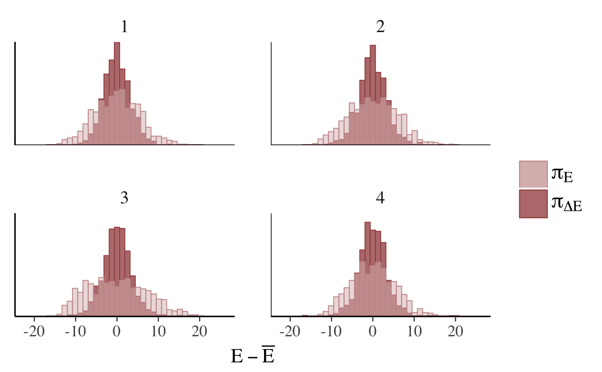
The two histograms ideally look the same (Betancourt, 2017), which is only the case for the non-centered parameterization (right):
compare_cp_ncp(
mcmc_nuts_energy(np_cp, binwidth = 1/2),
mcmc_nuts_energy(np_ncp, binwidth = 1/2)
)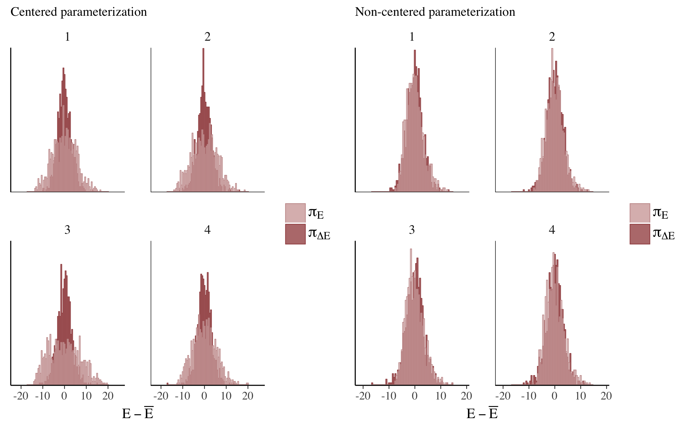
The difference between the parameterizations is even more apparent if we force the stepsize to a smaller value and help the chains explore more of the posterior:
np_cp_2 <- nuts_params(fit_cp_2)
np_ncp_2 <- nuts_params(fit_ncp_2)
compare_cp_ncp(
mcmc_nuts_energy(np_cp_2),
mcmc_nuts_energy(np_ncp_2)
)
See Betancourt (2017) for more on this particular example as well as the general theory behind the energy plots.
References
Betancourt, M. (2017). A conceptual introduction to Hamiltonian Monte Carlo. https://arxiv.org/abs/1701.02434
Betancourt, M. (2016). Diagnosing suboptimal cotangent disintegrations in Hamiltonian Monte Carlo. https://arxiv.org/abs/1604.00695
Betancourt, M. and Girolami, M. (2013). Hamiltonian Monte Carlo for hierarchical models. https://arxiv.org/abs/1312.0906
Gabry, J., and Goodrich, B. (2017). rstanarm: Bayesian Applied Regression Modeling via Stan. R package version 2.15.3. http://mc-stan.org/users/interfaces/rstanarm.html, https://CRAN.R-project.org/package=rstanarm
Gelman, A. and Rubin, D. B. (1992). Inference from iterative simulation using multiple sequences. Statistical Science. 7(4): 457–472.
Gelman, A., Carlin, J. B., Stern, H. S., Dunson, D. B., Vehtari, A., and Rubin, D. B. (2013). Bayesian Data Analysis. Chapman & Hall/CRC Press, London, third edition.
Hoffman, M. D. and Gelman, A. (2014). The No-U-Turn Sampler: adaptively setting path lengths in Hamiltonian Monte Carlo. Journal of Machine Learning Research. 15:1593–1623.
Rubin, D. B. (1981). Estimation in Parallel Randomized Experiments. Journal of Educational and Behavioral Statistics. 6:377–401.
Stan Development Team. (2017). Stan Modeling Language Users Guide and Reference Manual. http://mc-stan.org/users/documentation/
Stan Development Team. (2017). RStan: the R interface to Stan. R package version 2.16.2. http://mc-stan.org/users/interfaces/rstan.html, https://CRAN.R-project.org/package=rstanarm